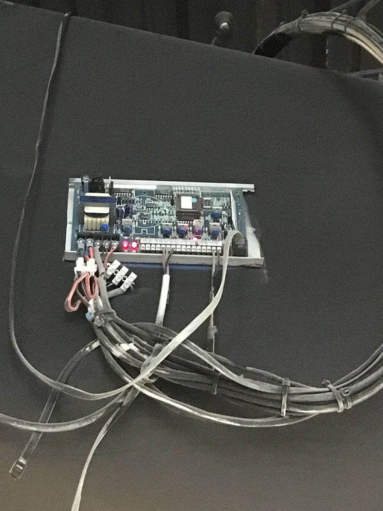
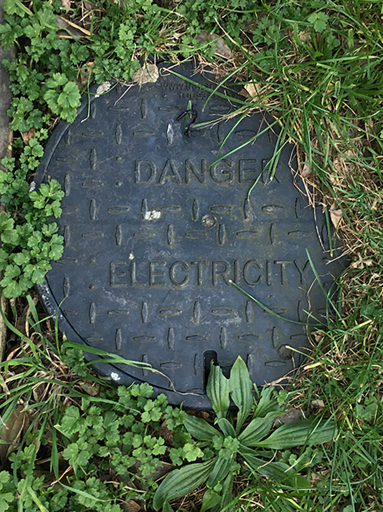
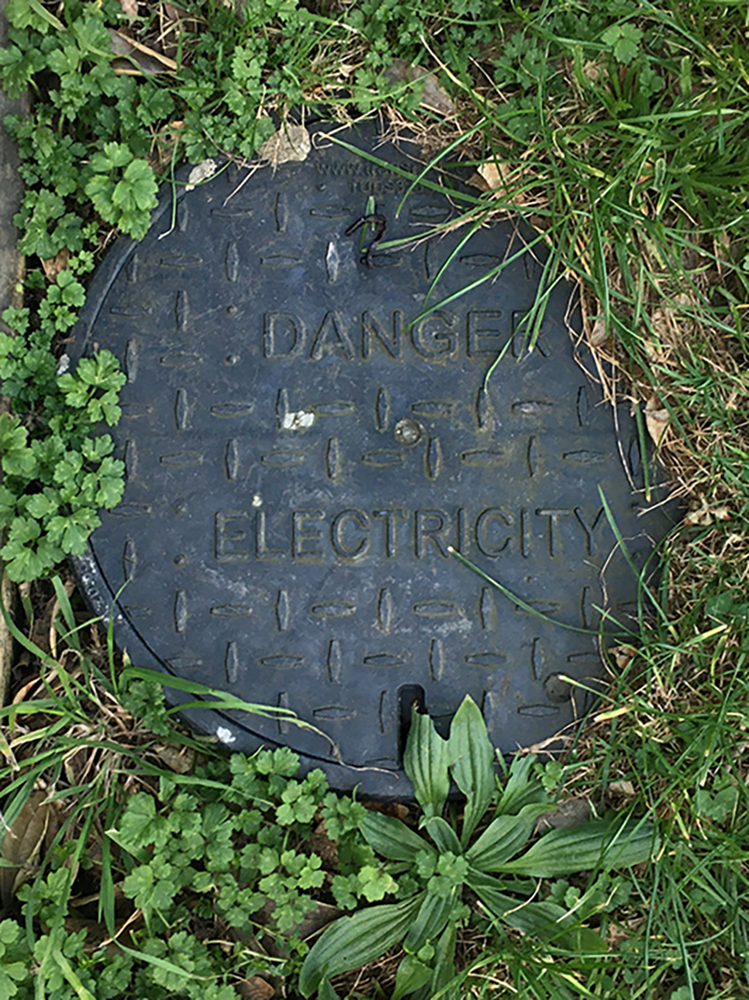

ROAD MARKINGS & UNDERGROUND
These are examples of road markings for cables lying underground all conecting to various networks. There are also tradtional looking manholes and other electrical manholes which have a polyethylene lid instead.
 



OUTSIDE
These are photos of various cables and boxes found in the external world around us.